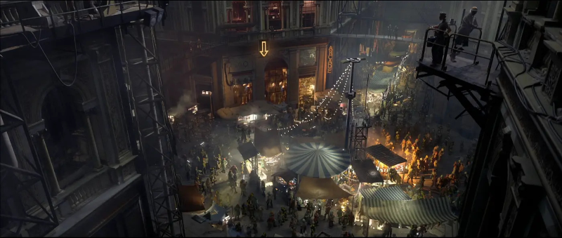
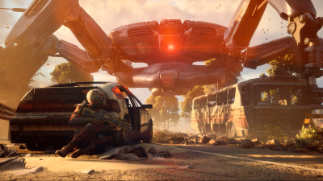
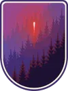

Speranza is a fictional city featured in one of my favorite video games this year, Arc Raiders. This is a super popular extraction shooter where you are pitted against robots and other players in a post-apocalyptic setting. You are meant to work together or fight for resources to supply the city of Speranza and gear up to fight even more powerful robots. It's a very fast-paced and exciting gameplay loop and I can't get enough of it.
The following is the lore of the universe and some explanation of the gameplay behind this super popular title.

The year is 2180. The world has been ravaged by war, famine and disease. The ultra-elite have taken refuge off-planet. The rest of humanity have been left to fend for themselves. 20 years prior, the members of the off-planet elite reprogrammed the once-harmless resource gathering robots called Arc.
The Arc became highly aggressive in an attempt to cull the remainder of humanity. They exist to rid the earth dwellers to maximize the output of the planet for the off-world elite. When met with highly aggressive robots, humanity fled underground into the Toledo network. Speranza, the headquarters of the Toledo network, is just one of many hidden cities offering safety and refuge to those in need. This network spans across modern-day Italy. You as a Raider are tasked with a dangerous task... going topside.

Missions topside must be fast. Gather as many resources as you can before Arc are made aware of you. Once they find you, they will stop at nothing to make sure you don't make it back to Speranza. Your time is limited on the surface as an orbital strike is called once you are spotted.
This current season just finished. I managed to climb to one of the highest ranks in the game... Daredevil III
